6.1 概览
页面目标
展示档案完善度与所选日期范围内的规则/模板/发送概况。
页面布局
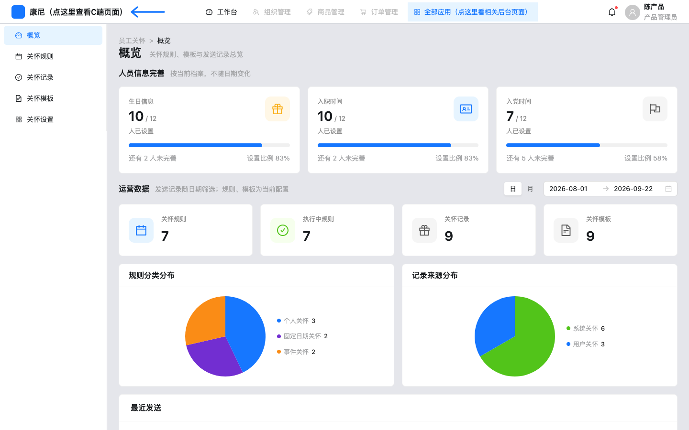
概览-页面布局-页面整体：标题「概览」；上人员信息完善，下运营数据。
概览-人员信息完善-三卡：生日信息 / 入职时间 / 入党时间：已设置人数、未完善人数、比例进度条。文案「按当前档案，不随日期变化」。
组件显示逻辑
| 组件路径 | 组件类型 | 默认状态 | 显示/隐藏逻辑 | 启用/禁用逻辑 | 数据来源 | 状态变化 | 空/错/加载状态 | 权限/条件控制 |
|---|
| 概览-人员信息完善-三卡 | Card×3 | 始终显示 | 始终 | 始终 | completionStats(employees) | percent 100 时 Progress success | 无单独空态 | 无 |
| 概览-运营数据-日期范围 | DateRange | defaultCareOverviewDateRange | 始终 | 始终 | 本地 state | 改范围重算 scopedRecords | 无 | 无 |
| 概览-最新记录-查看 | 链接按钮 | 每行显示 | 始终 | 始终 | onNavigate 关怀记录页 | 跳转记录页，不带行 id | 无 | 无 |
操作说明
| 操作名称 | 组件路径 | 触发元素 | 前置条件 | 启用/禁用逻辑 | 用户动作 | 系统响应 | 状态变化 | 成功反馈 | 失败反馈 | 跳转/接口 |
|---|
| 查看记录 | 概览-最新记录-查看 | Button type=link | 有行 | 始终 | 点击 | onNavigate 到 care-records | 切记录页 | 无 toast | 无 | 无 API |
验收标准
Given 概览，When 改日期，Then 仅发送记录统计变化，人员完善卡不变。
6.2 关怀规则
页面目标
按三类场景管理规则生命周期。
页面布局
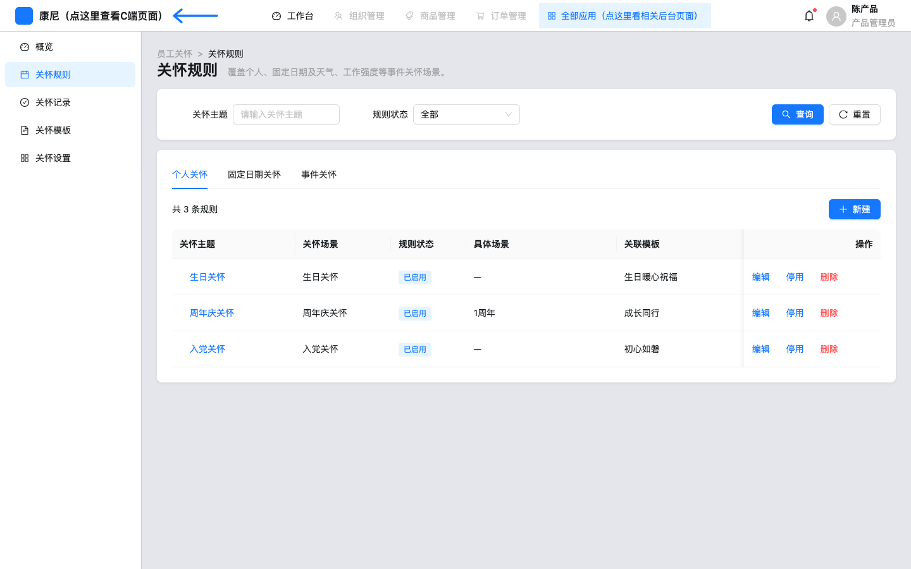
关怀规则-页面布局-页面整体：副标题覆盖个人、固定日期及天气、工作强度。默认 Tab「个人关怀」。
关怀规则-查询筛选-搜索区：字段：关怀主题、规则状态（全部/已启用/未启用/已过期）。查询/重置。无发送人。
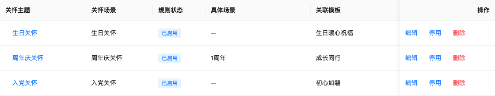
关怀规则-列表表格-数据表：列：主题（链到编辑）、场景、规则状态 Tag、具体场景、关联模板、规则时效、推送时间、关怀积分（天气显示 —）、操作。
字段说明
| 字段名称 | 组件路径 | 控件类型 | 是否必填 | 默认值 | 校验规则 | 选项值 | 业务含义 |
|---|
| 关怀主题 | 关怀规则-查询筛选-关怀主题 | Input | 否 | 空 | includes 模糊 | 自由文本 | 筛 name |
| 规则状态 | 关怀规则-查询筛选-规则状态 | Select | 否 | all | 无 | 全部/已启用=执行中/未启用=未开始/已过期 | 筛 displayRuleStatus |
操作说明
| 操作名称 | 组件路径 | 触发元素 | 前置条件 | 启用/禁用逻辑 | 用户动作 | 系统响应 | 状态变化 | 成功反馈 | 失败反馈 | 跳转/接口 |
|---|
| 新建 | 关怀规则-工具栏-新建 | primary Button | 无 | 始终 | 点击 | 带 defaultCreateType 进创建页 | 打开表单 | 无 | 无 | 无 API |
| 停用/启用 | 关怀规则-行操作-启停 | 更多菜单 | 非已过期 | 已过期不出现该项 | 确认弹窗 | setRuleStatus 执行中↔未开始 | Tag 文案切换已启用/未启用 | toast 已停用/已启用 | 取消无变化 | 内存 store |
| 删除 | 关怀规则-行操作-删除 | 危险项 | 无 | 始终 | 确认删除 | removeRule | 行消失 | toast 已删除 | 取消无变化 | 内存；文案：历史记录不受影响 |
验收标准
Given 固定日期 Tab，When 点新建，Then 创建页场景可选节日/其他，不可选节气。
6.3 新建/编辑规则
页面目标
配置触发场景、推送时间并关联模板。今日约束：新建不开放节气。
页面布局
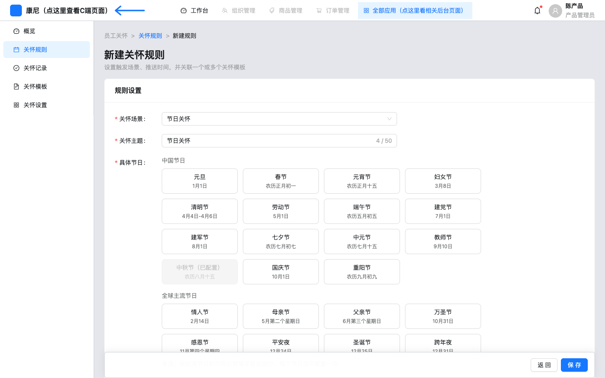
新建规则-页面布局-表单页：面包屑 员工关怀 > 关怀规则 > 新建规则。标题「新建关怀规则」。单卡「规则设置」。
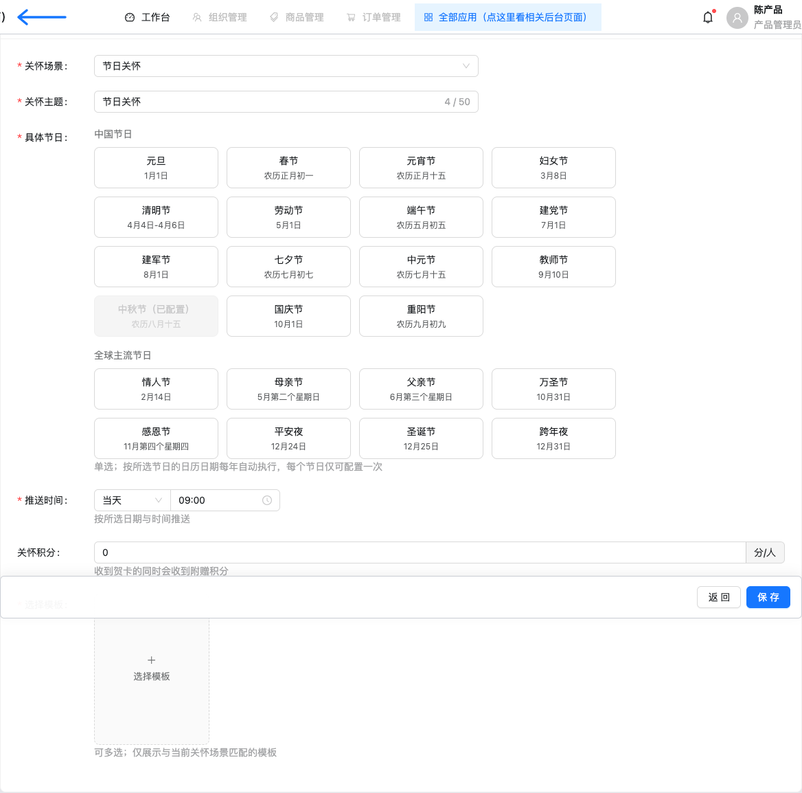
新建规则-规则设置-表单卡：默认场景节日关怀；关怀主题计数 50；具体节日磁贴；规则时效/推送/积分/模板。
 新建规则-规则设置-场景下拉：分组：个人关怀（生日/周年庆/入党）、固定日期关怀（节日关怀、其他）、事件关怀（天气、工作强度）。固定日期组无「节气关怀」。
新建规则-规则设置-节气URL回落：打开 create/节气关怀 后场景仍为节日关怀，出现「具体节日」而非「具体节气」。
新建规则-规则设置-场景下拉：分组：个人关怀（生日/周年庆/入党）、固定日期关怀（节日关怀、其他）、事件关怀（天气、工作强度）。固定日期组无「节气关怀」。
新建规则-规则设置-节气URL回落：打开 create/节气关怀 后场景仍为节日关怀，出现「具体节日」而非「具体节气」。
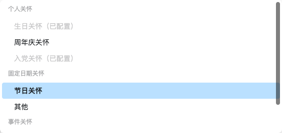
新建规则-规则设置-节气URL场景下拉：即便 URL 带节气，下拉仍 hideDeferred，无节气选项。
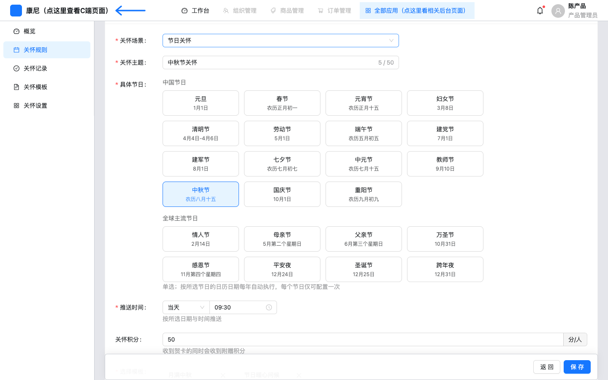
编辑规则-规则设置-节日页：编辑 r4 等已有节日规则。保存文案「关怀规则已更新」。
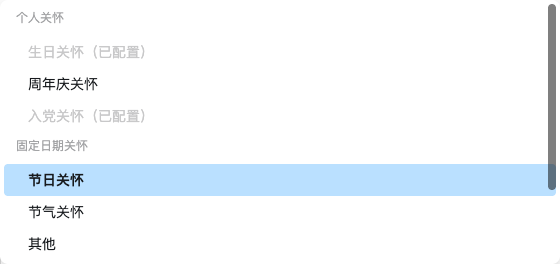
编辑规则-规则设置-场景下拉含节气：mode=edit 时固定日期组含「节气关怀」。代码注释：本期新建不开放；编辑已有规则仍保留当前类型。
组件显示逻辑
| 组件路径 | 组件类型 | 默认状态 | 显示/隐藏逻辑 | 启用/禁用逻辑 | 数据来源 | 状态变化 | 空/错/加载状态 | 权限/条件控制 |
|---|
| 新建规则-规则设置-场景下拉 | Select 分组 | 节日关怀 | 始终 | 生日/入党若已占用则 disabled 并标（已配置） | SCENE_OPTIONS 过滤 DEFERRED | onChange 清空模板与场合字段 | 无 | create 隐藏节气 |
| 新建规则-规则设置-具体节日 | 磁贴单选 | 节日类型显示 | type===节日关怀 | 已配置节日 disabled | festivalRadioOptions | 写入 festival | 必填提示请选择一个具体节日 | 每节日仅一次 |
| 编辑规则-规则设置-具体节气 | 磁贴 | 仅 type===节气关怀 | 选节气后显示 | 已配置节气 disabled | solarTermRadioOptions | 写入 solarTerm | 请选择一个具体节气 | 新建路径不可达除非改类型（编辑） |
| 新建规则-规则设置-开启同事祝福 | Switch | 关 | isPersonalType | 始终 | coworkerEnabled | 开则显示范围与祝福推送时间 | 无 | 仅个人关怀 |
字段说明
| 字段名称 | 组件路径 | 控件类型 | 是否必填 | 默认值 | 校验规则 | 选项值 | 业务含义 |
|---|
| 关怀场景 | 新建规则-规则设置-关怀场景 | Select | 是 | 节日关怀（create）；URL 延迟类型忽略 | required | 见 CARE_TYPES，新建排除节气 | 决定后续字段 |
| 关怀主题 | 新建规则-规则设置-关怀主题 | Input | 是 | 常等于类型名 | required max 50 | 自由文本 | 列表展示名 |
| 周年数 | 新建规则-规则设置-周年数 | Select | 周年庆时是 | 无 | 1–20，已配置 disabled | N周年 | 按入职日触发 |
| 具体节日 | 新建规则-规则设置-具体节日 | CareFestivalPicker | 节日时是 | 无 | 恰好 1 个且未占用 | 中外节日常量 | 每年日历执行 |
| 具体节气 | 编辑规则-规则设置-具体节气 | CareOptionTiles | 节气时是 | 无 | 恰好 1 个且未占用 | SOLAR_TERM_DEFS | 本期仅编辑可达 |
| 开启同事祝福 | 新建规则-规则设置-开启同事祝福 | Switch | 否 | false | 个人类型才渲染 | on/off | 是否邀请同事送祝福 |
操作说明
| 操作名称 | 组件路径 | 触发元素 | 前置条件 | 启用/禁用逻辑 | 用户动作 | 系统响应 | 状态变化 | 成功反馈 | 失败反馈 | 跳转/接口 |
|---|
| 保存新建 | 新建规则-底栏-保存 | primary Button | 表单可提交 | 始终可点，校验在 submit | 点击 | validateFields + validateRuleDraft + saveRule | status 默认执行中 | toast 已创建并启用 | message.error 校验文案 | 内存；无 HTTP |
| 返回 | 新建规则-底栏-返回 | Button | 无 | 始终 | 点击 | onBack | 回规则列表 | 无 | 未保存丢失 {impl} | 无 |
交互规则
- 新建：
hideDeferred: true 从下拉剔除 DEFERRED_CREATE_TYPES。
- createType：
isCareType(recordId) && !isDeferredCreateType(recordId) 才采纳 URL 类型；否则节日关怀。若该唯一场景已占用，改用 defaultCreateType。
- 切场景会清空 templateKeys、occasion、festival、solarTerm、天气/强度场景。
- 编辑页仍列出节气，便于维护历史规则；种子规则列表无节气行，模板 t6 仍为节气类型。
校验规则
见 validateRuleDraft：主题非空、至少一模板、生日/入党全局唯一、周年数不重复、节日/节气单选且不重复、其他时效日期格式、天气/强度各单选一场景。
验收标准
Given 新建页，When 打开场景下拉，Then 无「节气关怀」。Given URL 带节气，When 进入创建，Then 场景=节日关怀。Given 编辑页，When 打开下拉，Then 含「节气关怀」。
6.4 关怀记录
页面目标
只读查看系统发出的关怀，并统计同事祝福次数。今日：去掉发送人筛选项；祝福数列右对齐。
页面布局
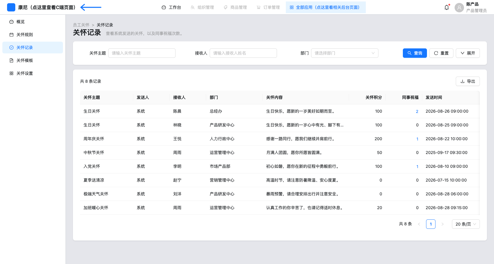
关怀记录-页面布局-页面整体：副标题「查看系统发送的关怀，以及同事祝福次数。」无用户关怀 Tab。
关怀记录-查询筛选-搜索区：展开后字段：关怀主题、接收人、部门、关怀积分、发送日期、发送状态。无「发送人」、无「请输入发送人姓名」。
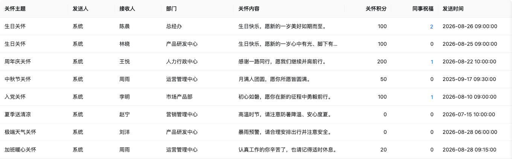
关怀记录-列表表格-数据表：列：主题、发送人（系统）、接收人、部门、内容、积分右对齐、同事祝福右对齐数字、发送时间、发送状态。次数>0 为链接。
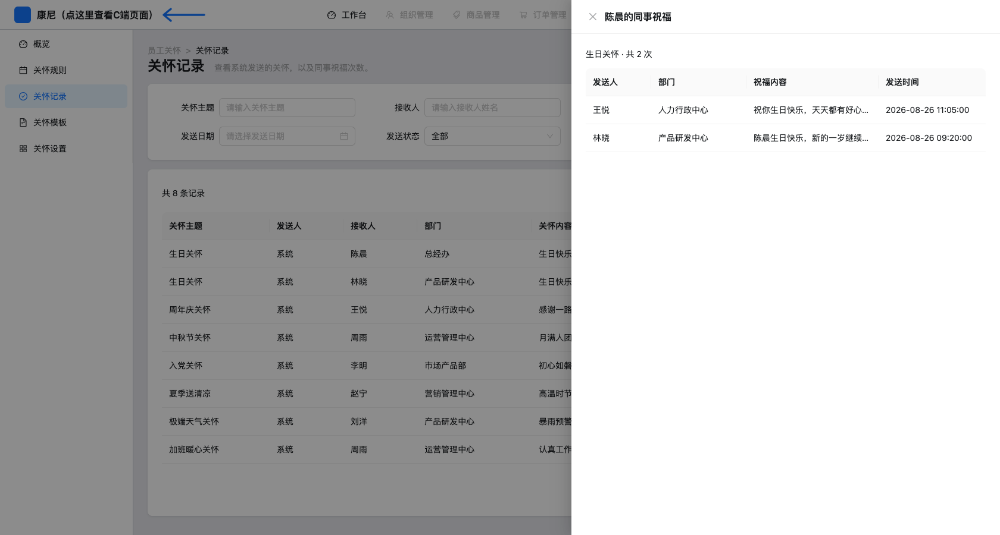
关怀记录-同事祝福-抽屉：标题「{{接收人}}的同事祝福」；摘要「主题 · 共 N 次」；列：发送人、部门、祝福内容、发送时间。空态「暂无同事祝福」。
组件显示逻辑
| 组件路径 | 组件类型 | 默认状态 | 显示/隐藏逻辑 | 启用/禁用逻辑 | 数据来源 | 状态变化 | 空/错/加载状态 | 权限/条件控制 |
|---|
| 关怀记录-查询筛选-发送人 | 已移除 | 不渲染 | 代码无 SearchField 发送人 | — | RecordQuery.sender 仍存在但页面恒为空串 | filterRecords 的 sender 条件实际不生效 | — | 今日改动 |
| 关怀记录-列表表格-发送人列 | Table 列 | 显示 | 始终 | 不可筛 | record.sender | 仅展示 | 无 | 导出 CSV 仍含发送人 |
| 关怀记录-列表表格-同事祝福 | 数字/链接 | 右对齐 | 始终 | count=0 纯文本；>0 Button link | colleagueBlessingsFor(id).length | 点击打开抽屉 | 0 显示 0 | 用户关怀行不进本页 |
| 关怀记录-列表表格 | Table | 系统关怀全量 | rows.filter source===系统关怀 | 导出在 filtered.length=0 时 disabled | useRecords mock | 查询写入 query 后重算 | 无查询：暂无关怀记录；有查询：没有符合条件的关怀记录 | 无 |
字段说明
| 字段名称 | 组件路径 | 控件类型 | 是否必填 | 默认值 | 校验规则 | 选项值 | 业务含义 |
|---|
| 关怀主题 | 关怀记录-查询筛选-关怀主题 | Input | 否 | 空 | includes | — | 筛 ruleName |
| 接收人 | 关怀记录-查询筛选-接收人 | Input | 否 | 空 | includes 姓名 | — | 筛 name |
| 部门 | 关怀记录-查询筛选-部门 | Select | 否 | 空 | 精确匹配 | 系统关怀行去重部门 | 筛 department |
| 关怀积分 | 关怀记录-查询筛选-关怀积分 | InputNumber | 否 | 空 | min 0 整数，字符串相等匹配 | — | 筛 points |
| 发送日期 | 关怀记录-查询筛选-发送日期 | DatePicker | 否 | 空 | pushTime startsWith YYYY-MM-DD | — | 按日 |
| 发送状态 | 关怀记录-查询筛选-发送状态 | Select | 否 | all | 无 | 全部/已发送 | 选项仅已发送，无失败态 |
列表列
| 列名 | 组件路径 | 数据含义 | 格式 | 是否可排序 | 是否可筛选 | 行操作 |
|---|
| 关怀主题 | 关怀记录-列表表格-关怀主题 | ruleName | 省略号 | 否 | 查询区 | 无 |
| 发送人 | 关怀记录-列表表格-发送人 | sender | 文本 | 否 | 否（今日去掉筛选项） | 无 |
| 接收人 | 关怀记录-列表表格-接收人 | name | 文本 | 否 | 查询区 | 无 |
| 部门 | 关怀记录-列表表格-部门 | department | 文本 | 否 | 查询区 | 无 |
| 关怀内容 | 关怀记录-列表表格-关怀内容 | content | 省略号 | 否 | 否 | 无 |
| 关怀积分 | 关怀记录-列表表格-关怀积分 | points | 右对齐 | 否 | 查询区 | 无 |
| 同事祝福 | 关怀记录-列表表格-同事祝福 | 祝福条数 | 右对齐；>0 链接 | 否 | 否 | 打开抽屉 |
| 发送时间 | 关怀记录-列表表格-发送时间 | pushTime | 日期时间 | 否 | 按日 | 无 |
| 发送状态 | 关怀记录-列表表格-发送状态 | status | 文本 | 否 | 查询区 | 无 |
操作说明
| 操作名称 | 组件路径 | 触发元素 | 前置条件 | 启用/禁用逻辑 | 用户动作 | 系统响应 | 状态变化 | 成功反馈 | 失败反馈 | 跳转/接口 |
|---|
| 查询 | 关怀记录-查询筛选-查询 | SearchPanel onSearch | 无 | 始终 | 点击查询 | draft→query | 表格刷新；工具栏「共找到 n / m」 | 无 | 空表 Empty | 无 API |
| 重置 | 关怀记录-查询筛选-重置 | onReset | 无 | 始终 | 点击 | draft/query 回 EMPTY（source 仍系统关怀） | 全量系统行 | 无 | 无 | 无 |
| 查看祝福 | 关怀记录-列表表格-同事祝福 | aria-label 查看{{名}}的同事祝福 | count>0 | 0 不可点 | 点击数字 | setBlessingRecord | 抽屉宽 720 | 无 toast | 空抽屉 Empty | 内存 colleagueBlessingsFor |
| 导出 | 关怀记录-工具栏-导出 | Download Button | filtered.length>0 | 空结果 disabled | 点击 | CSV Blob 下载 | 无行变化 | toast 已导出关怀记录 | 无失败分支 | 无服务端接口 |
交互规则
- 页面强制
source: '系统关怀'。用户关怀 mock 行（如赵宁）不出现；测试断言无「用户关怀」、无「查看赵宁的同事祝福」。
- 同事祝福单元格
display:flex; justify-content:flex-end，与积分列同为右对齐。
filterRecords 仍读取 query.sender，但 UI 不提供输入，恒为空。
验收标准
Given 记录页，When 查看筛选，Then 无发送人输入。Given 有祝福的行，When 看「同事祝福」列，Then 数字靠右且可点开抽屉。Given 无祝福行，Then 显示 0 且无按钮。
6.5 关怀模板
页面目标
按三类场景维护消息推送与贺卡（个人类型另含同事祝福消息推送）。
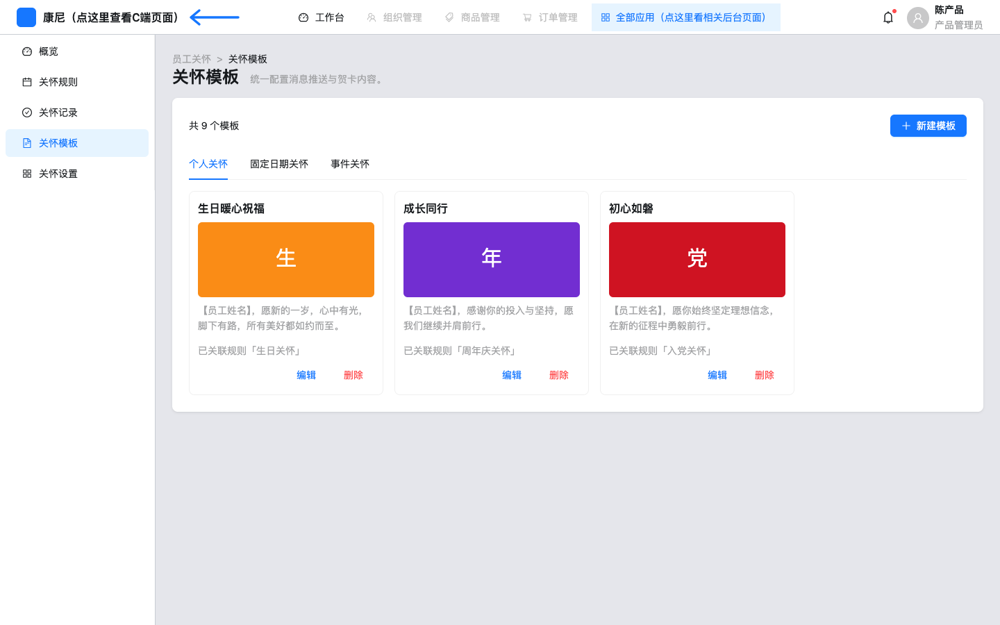
关怀模板-页面布局-页面整体：副标题「统一配置消息推送与贺卡内容。」Tab 个人/固定日期/事件；卡片封面 1068/455；新建模板。
操作说明
| 操作名称 | 组件路径 | 触发元素 | 前置条件 | 启用/禁用逻辑 | 用户动作 | 系统响应 | 状态变化 | 成功反馈 | 失败反馈 | 跳转/接口 |
|---|
| 删除模板 | 关怀模板-卡片-删除 | 确认框 | 未被规则引用 | 占用则 warning 不删 | 确认 | removeTemplate | 卡片消失 | toast 已删除 | 占用：「请先从规则中移除」 | 内存 |
模板表单/详情本次未逐控件截图；行为以 CareTemplateFormPage 为准：封面→标题→副标题顺序；个人模板含「同事祝福消息推送」Tab。根据页面推测需要 生产需对象存储。
6.6 关怀设置
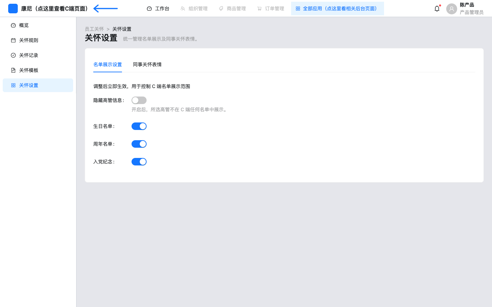
关怀设置-页面布局-页面整体：Tab：名单展示设置、同事关怀表情。表情表操作含上移/下移，无单独「排序」按钮。
名单可隐藏高管并勾选人员（TreeSelect mock 组织）。表情图片使用共享 1:1 上传提示。持久化 待确认（仅内存）。